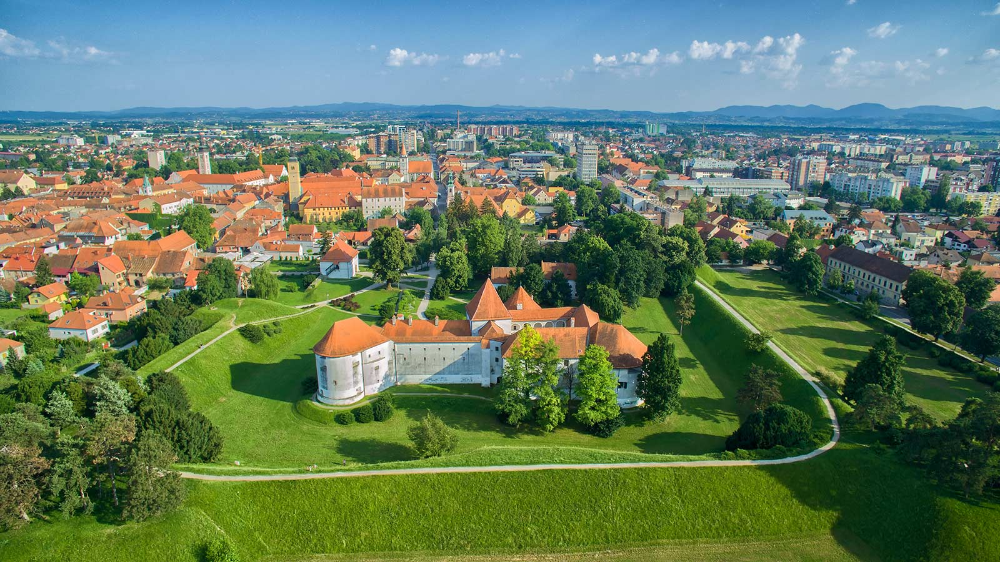
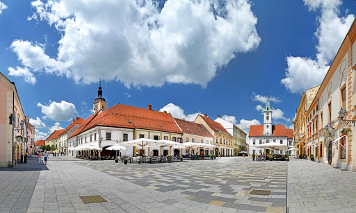

Varaždin je grad u sjeverozapadnoj Hrvatskoj smješten uz obalu rijeke Drave, povijesno, kulturno, obrazovno, gospodarsko, sportsko i turističko središte Varaždinske županije, najstarije županije u Hrvatskoj. Nalazi se na raskrižju četiriju velikih, povijesnih regija: Štajerske, Zagorja, Međimurja i Podravine.
Županija obuhvaća sjeverozapadni dio Hrvatske i u zemljopisnom smislu pripada podravskom pojasu. Prostire se na površini od 1247 km2 na kojoj, prema posljednjem popisu stanovništva iz 2021. godine, živi 160.264 stanovnika, po čemu je ovaj kraj jedan od najnapučenijih u Hrvatskoj. Ipak u odnosu na prošli popis stanovništva broj stanovnika županije smanjen je za 8,92%, što je nešto manje od prosjeka Hrvatske (-9,5%).
Prema popisu stanovnika iz 2021. godine, grad Varaždin s gradskim naseljima ima 43.999 stanovnika.
U povijesnim ga se izvorima na drugim jezicima nalazi u oblicima: njemački: Warasdin, mađarski: Varasd, latinski: Varasdinum.